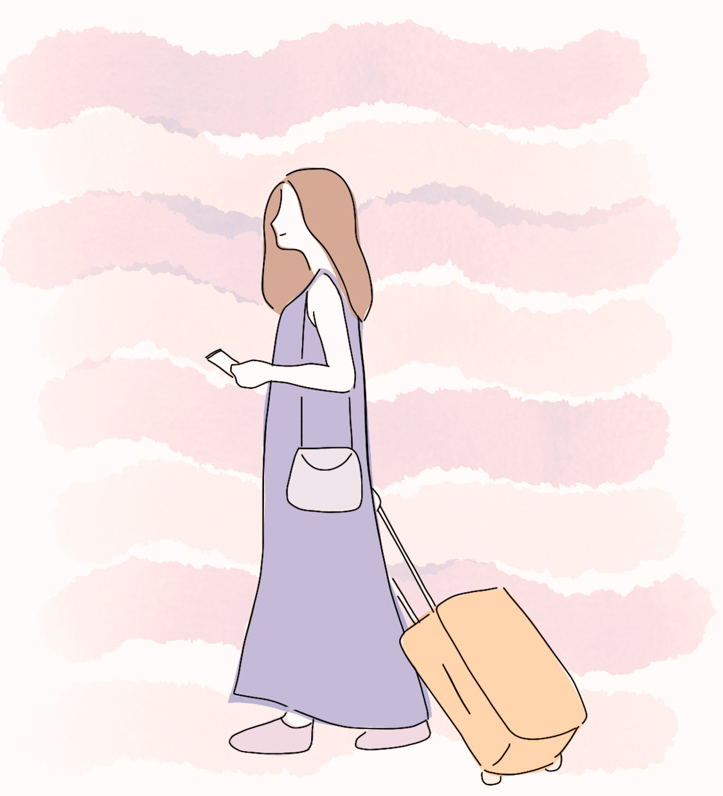

Kaikki aktiviteetit
Luovat aktiviteetit
- Maalaaminen
- Piirtäminen
- Kirjoittaminen
- Valokuvaus
- Musiikin säveltäminen
- Käsityöt
Kehittävät aktiviteetit
- Kielten opiskelu
- Shakin pelaaminen
- Koodaaminen
- Kirjojen lukeminen
- Dokumenttien katsominen
- Matematiikkatehtävät
Aktiivinen ajanviete
- Lenkkeily
- Pyöräily
- Jooga
- Uinti
- Saliharjoittelu
- Vaellus
Sosiaalinen ajanviete
- Leffailta ystävien kanssa
- Lautapelien pelaaminen
- Kahvittelu kavereiden kanssa
- Yhteisöprojektit
- Urheilutapahtumiin osallistuminen
- Juhlat ja illanvietot
Rentoutuminen
- Meditaatio
- Äänikirjojen kuuntelu
- Kylpy
- Luonnossa oleilu
- Hengitysharjoitukset
- Musiikin kuuntelu
Itsehoito
- Ihonhoito
- Hieronta
- Hyvä ruokavalio
- Riittävä uni
- Mielenterveysharjoitukset
- Käynti terveystarkastuksissa
